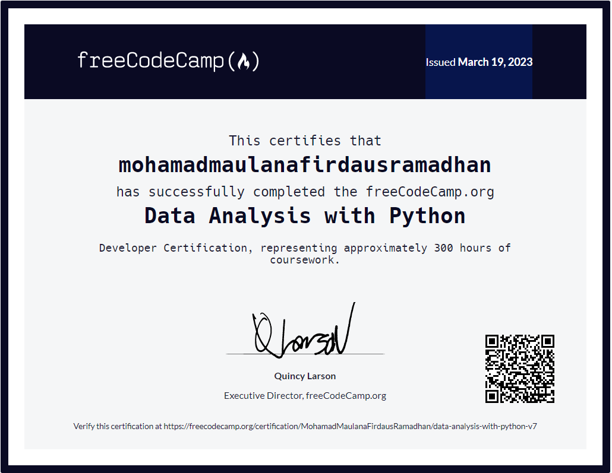

Data Analysis with Python Certificate
As a certified data analyst with a solid foundation in Python, I am confident that I can add value to any data analysis project. The Data Analysis with Python course offered by freecodecamp taught me the essential skills needed to perform in-depth data analysis. During the course, I honed my ability to clean, visualize and analyze data using popular Python libraries such as Pandas, Matplotlib and Seaborn.
This certification demonstrates my proficiency in data analytics, a highly sought-after skill in today's industry. I am excited to apply my skills to various data analysis projects and make data-driven decisions. As a data analyst, I am well equipped to spot trends, uncover insights and effectively communicate my findings to stakeholders.
In addition to my certification, I have completed several data analysis projects that showcase my practical skills. For example, I created a Mean-Variance-Standard Deviation Calculator that calculates essential statistical metrics of a set of numbers. I have also developed a Demographic Data Analyzer that analyzes demographic data using Pandas to answer specific questions, such as the average age of a population or the number of people with a specific educational background.
Furthermore, I have created a Medical Data Visualizer that creates compelling visualizations to help analyze medical data, such as trends in patient symptoms or treatment outcomes. I have also developed a Page View Time Series Visualizer that uses Pandas and Matplotlib to visualize time series data of Wikipedia page views, enabling stakeholders to identify patterns and gain insights into page view trends. Lastly, I have created a Sea Level Predictor that analyzes historical data of sea level changes to predict future trends.
These projects not only demonstrate my technical proficiency in Python and data analytics, but also demonstrate my ability to apply my skills to real-world scenarios. As a data analyst, I enjoy using my experience to drive meaningful results and make informed decisions. I look forward to tackling new data analytics challenges and making valuable contributions to any team.